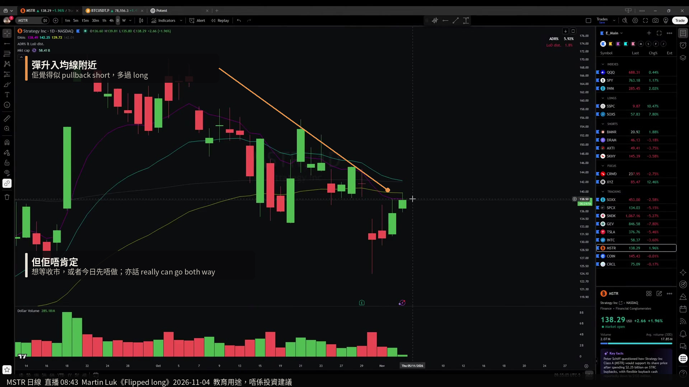
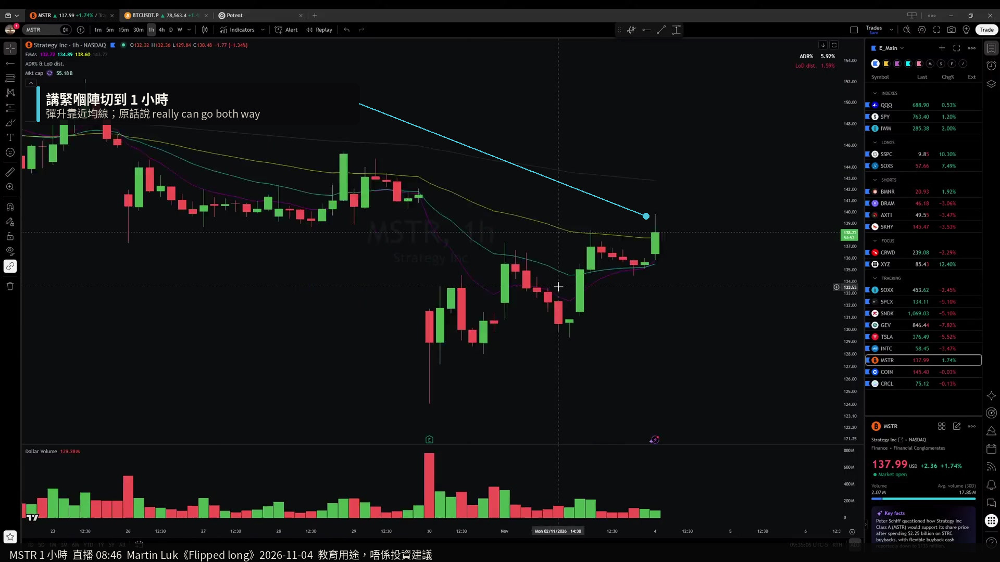

概要
似 pullback short，但今日可以兩邊都行
08:43 開始，畫面係 MSTR 日線。佢話而家睇落似 pullback short，多過 long；但隨即話唔肯定，想等收市，或者今日先唔做。08:46 切到 1 小時圖，之後先講 really can go both way。YouTube 自動字幕把 MSTR 誤聽成 MSTL，本頁按 Whisper 同畫面更正。
圖一 · 主圖
MSTR 日線：彈升入均線附近
直播 08:43

原話
MSTR right now looks like a pullback short instead of a long I I'm not sure I think maybe we need to wait for the close maybe not today
MSTR 而家睇落似 pullback short，而唔係 long。我唔肯定，或者要等收市，今日可能先唔做。
點樣讀
日線見到價格由低位彈升，靠近均線。佢將呢個位置讀成偏 pullback short，而唔係當做 long。
重點係後面嗰句保留：唔肯定，想等收市，或者今日先唔做。呢科要學嘅係「位置可以咁讀，但未收市可以先唔做」，唔好寫成已經落實嘅淡倉。
圖二
MSTR 1 小時：講緊嗰陣切到呢個週期
直播 08:46

原話
really can go both way I
真係兩邊都可以行。
「wait for the close / maybe not today」係喺日線開始講；切到 1 小時之後，先補呢句 both way。
點樣讀
1 小時圖把日線嗰段彈升放大，價格靠近均線。呢幅圖適合用來理解點解佢會話兩邊都可以：向上未完，或者呢度先行回。
唔好把 1 小時圖讀成另外一個已經決定咗嘅方向。佢自己都話唔肯定。
附註
注意事項
- 08:49 之後畫面開始翻加密品種，但對白仍然收束緊 MSTR 呢段。本頁唔把之後嘅翻圖算入呢科。
- 畫面睇唔到成交價、倉位大細或者損益，所以唔寫死呢啲數字。